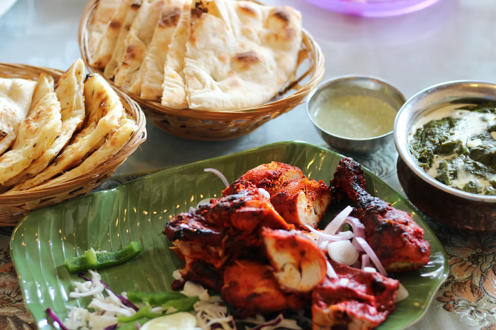

The restaurant was created in January 2000, and follows a traditional Pakistani cuisine with foods ranging from Curries and tandoori barbecue. These recipes are refined and have been passed down from generations of notable cooks in Pakistan. Some famous celeberties have rated this restaurant one of the best in the world, actors such as Dwyane Johnson and Kevin Hart who stopped by after filming for their movie that took place in Vancouver BC.
